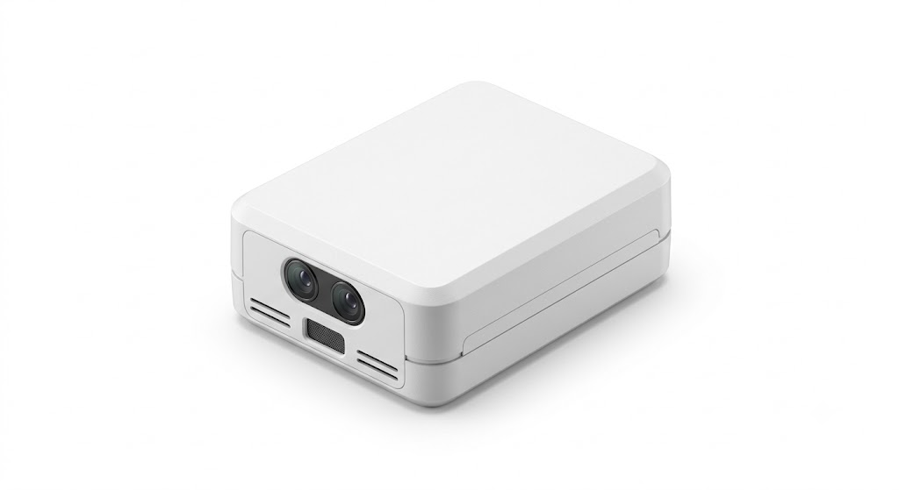

Find a way.
Without GPS.
Successive camera frames become a local estimate of movement. Our early visual-odometry prototypes track features to estimate speed and heading without a GPS fix.
Visual odometry · Early prototype

Autonomous systems.
For a world that won’t wait.
Orca Tech develops onboard autonomy
for defense systems operating beyond
reliable GPS and communications.
Waypoints follow a script. Autonomy has to read the world. We’re building systems that perceive their surroundings, estimate their own movement, and work toward decisions made onboard.
Orca GPS-denied module
Modular integration concept

One module. A new frame of reference.
Scroll to look insideA compact autonomy layer.
From what the camera sees
to where the system goes.
Successive camera frames become a local estimate of movement. Our early visual-odometry prototypes track features to estimate speed and heading without a GPS fix.
Visual odometry · Early prototype
Visible and infrared detection bring the surrounding scene into focus. Models tested against a YOLO baseline showed fewer false positives in our internal benchmarks.
Perception · Internal testingWe’re building an autonomy layer for existing machines, starting with GPS-denied navigation. Integration across air, land, and maritime platforms is the direction.
V0 Jetson Nano with an IMX219 stereo camera.
V1 Quadcopter prototype with OAK-D Lite, Raspberry Pi 4, and Pixhawk.
The autonomy architecture we’re pursuing
keeps the loop inside the vehicle.
Extract visual features and object cues from onboard sensing. Build a useful picture of the immediate environment.
Our work begins with local navigation.
Adaptive sensing and mission-level decisions remain the road ahead.
Localize and navigate through visual odometry, with a module designed for existing platforms.
Bring object and infrared detection into the navigation stack to add environmental context.
Switch between vision, radar, and other sensing strategies as operating conditions change.
Reduce operator load through more onboard decisions in denied and degraded environments.
For technical partnerships,
platform integration, and
early-stage collaboration.
Our direct contact channel will be available here soon.